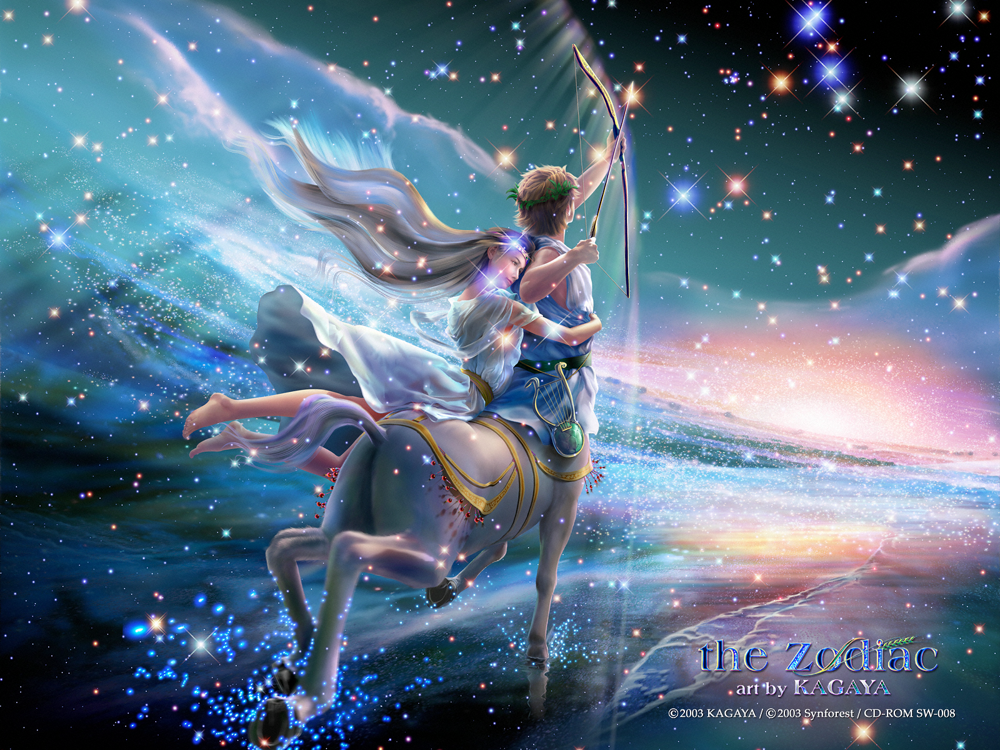
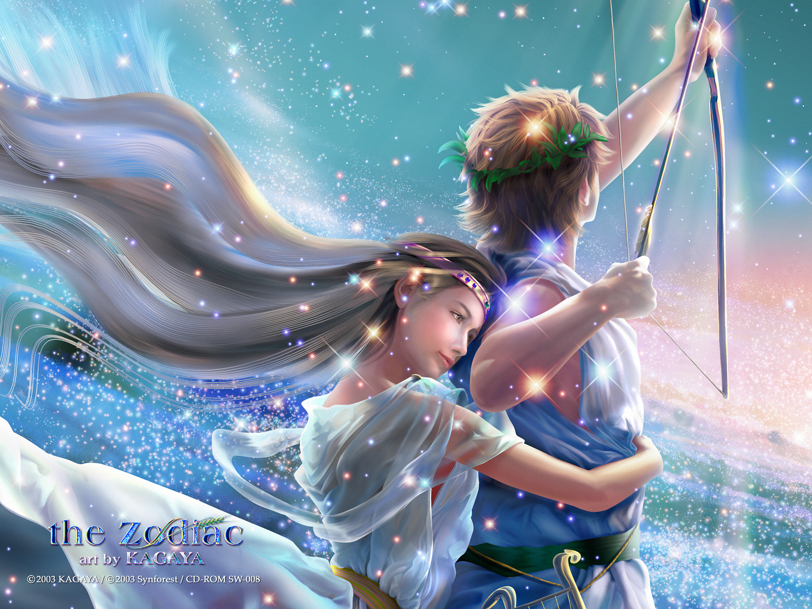
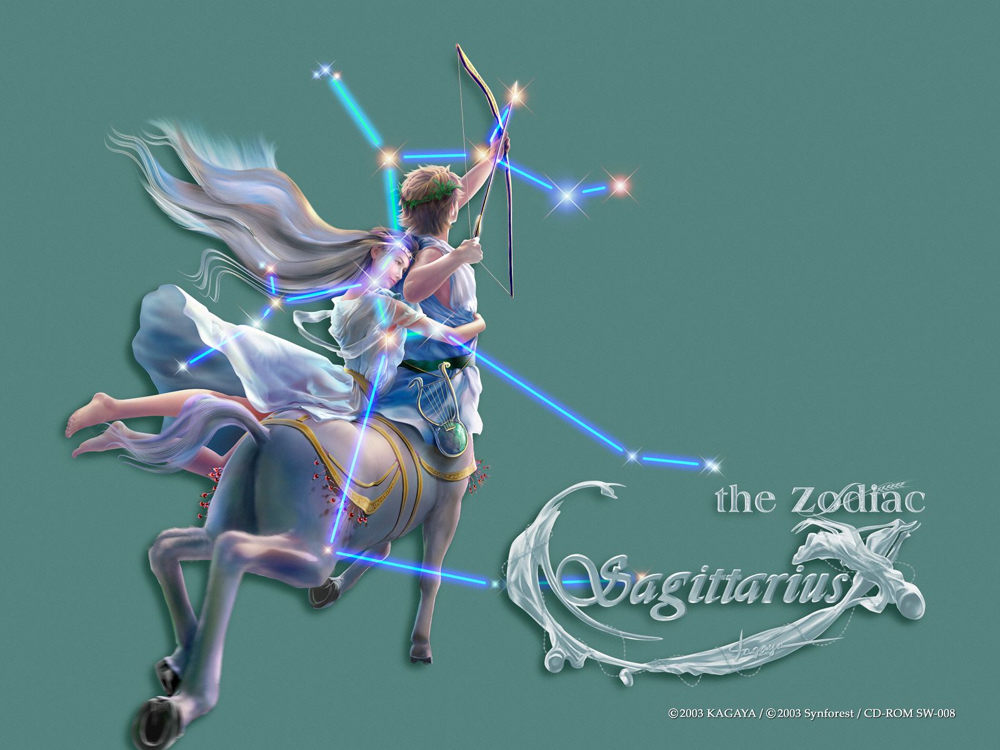
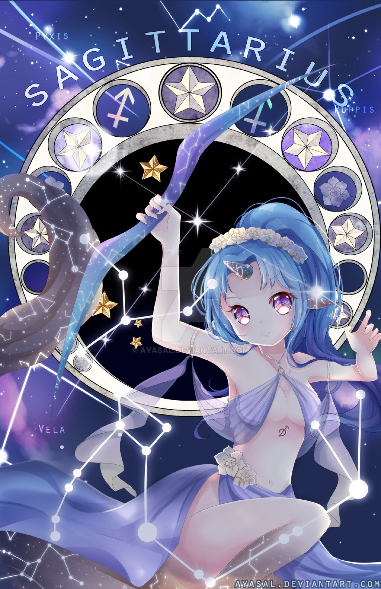

NHÂN MÃ
Nhân Mã đáng yêu, hòa đồng và hào hiệp. Họ ít khi nói dối và luôn cởi mở trong mọi chuyện. Hầu như mọi người đều biết những điều Nhân Mã đang dự định. Họ có trực giác tốt, thông minh và thích thú say sưa với mọi thứ. Mọi người nghĩ họ hơi thô lỗ nhưng đó chỉ là vì họ thành thật và luôn nói chính xác những điều họ nghĩ. Người Nhân Mã không nên dùng thẻ tín dụng vì họ xài tiền vô bờ bến.
Năng lượng dồi dào cộng với niềm đam mê khám phá, Nhân Mã là cung thích đi du lịch và được du lịch nhiều nhất cung hoàng đạo. Sự thông thái và tư duy rộng mở luôn là động lực thúc đẩy người cung này đi thật nhiều nơi để khám phá ý nghĩa của cuộc sống. Hướng ngoại, lạc quan, nhiệt tình của Nhân Mã khiến mọi người xung quanh ít khi thấy cung này buồn và than vãn. Họ đặc biệt thích sự thay đổi và làm mới mình. Dường như khám phá những điều mới lạ là điều không thể thiếu trong cuộc sống của Nhân Mã. Họ không thể đứng hay ngồi yên một chỗ mà không vận động và di chuyển.
Bên cạnh đó, Nhân Mã thích các hoạt động xã hội, thích sự tự do. Trong tính cách của Nhân Mã có sự đối kháng với các nguyên tắc mang tính áp đặt. Họ ghét nhất là sự quanh co, lừa dối. Bất kỳ hành động không trung thực nào mà con người này phát hiện ra, họ sẽ nổi giận và tìm hiểu cho tới tận gốc rễ của vấn đề.
2, Mô tảSagittarius (nhân vật thần thoại đầu người mình ngựa, hai tay bắn cung – Nhân Mã, hay Cung Thủ) là như vậy: thông minh, nhanh trí, vui tính và bộc trực.
Điểm đặc biệt trong tính cách của Nhân Mã là lòng quả cảm phi thường. Những người điển hình của cung này thường ham thích những nghề nghiệp mạo hiểm. Nhiều phi công thử nghiệm nổi tiếng sinh ra ở cung này. Trong máu của Nhân Mã có thái độ thách thức số phận, đùa giỡn tử thần.
Nhân Mã lạc quan, hòa đồng và hào hiệp. Họ ít khi nói dối và luôn cởi mở trong mọi chuyện. Hầu như mọi người đều biết những điều Nhân Mã đang dự định. Họ có trực giác tốt, thông minh và thích thú say sưa với mọi thứ. Mọi người nghĩ họ hơi thô lỗ nhưng đó chỉ là vì họ thành thật và luôn nói chính xác những điều họ nghĩ.
Sao Mộc là hành tinh của sự trù phú và hiểu biết. Sự thông thái của sao Mộc ‘tiêm nhiễm’ sang Người Bắn Cung với nhu cầu muốn phát triển triết lý cuộc đời độc đáo của riêng họ. Nhân Mã nào tiến hóa cao hơn sẽ biết cách dung hòa 2 mặt của nó (nửa người, nửa vật) để cung tên của họ (biểu tượng của tham vọng mạnh mẽ) nhắm vào trúng đích hơn.
Mặc dù thông minh và có tinh thần cầu tiến, Nhân Mã có điểm yếu là cư xử thiếu tế nhị. Trong các mối quan hệ, nó yêu cầu sự độc lập. Trong tình yêu, Nhân Mã không thể phủ nhận rằng mình là sao rộng lượng và đa tình nhất trong Hoàng Đạo.
3, Tính cách cơ bảnCũng giống như hình ảnh tượng trưng của họ, Nhân Mã xét trên một góc độ nào đó họ tự mâu thuẫn với chính mình. Từ góc độ của ngựa (Mã), tính cách của họ hoang dã, nguyên thuỷ; không chịu bó buộc, dễ thoả mãn; nhưng từ góc độ con người (Nhân) mà nói, họ có chí hướng cao xa, giàu triết lý, không chịu thua kém. Bất cứ hành động nào của họ đều chịu sự chi phối của hai yếu tố trên, vì vậy họ trở nên không thể đoán trước được, có khi còn khiến cho người ta cảm thấy kì lạ.
Nhưng, điều may mắn là họ có sinh lực sung mãn, ngôn từ khẳng khái, hoạt bát, nhanh nhẹn, lạc quan,có quyết tâm vươn lên, nhưng những điều này lại kết hợp với cả sự hưng phấn động vật của họ, do đó khiến cho họ giành được sự chú ý của nhiều người. Trong thế giới này, có thể nói tìm ra những người tươi cười là không nhiều, còn Nhân Mã luôn có thể thoải mái tươi cười.
Nếu nhốt Nhân Mã vào bốn bức tường, họ sẽ cảm thấy không an toàn. Họ có thiên tính quần cư, do đó không bao giờ ngừng tìm kiếm những thú vui thiên bẩm của mình. Họ luôn có một thái độ chơi đùa đối với bất cứ khó khăn nào. Họ không thích làm những công việc bình thường, khi họ có chủ ý gì đó khiến cho người khác hưng phấn, họ sẽ nắm chắc cây cung và phi ngựa như bay. Họ ko bao giờ quay đầu nhìn lại, cũng không mong muốn sống trong những kí ức, họ không chịu bất cứ sự khống chế ràng buộc nào, họ luôn hướng về phía trước, xem có cơ hội hay không.
Khi cơ hội đến, họ vừa hò hét người sau cố gắng, vừa phi như bay. Những người sinh thuộc chòm Nhân Mã cho rằng họ sinh thuộc chòm sao này là điều may mắn. Suy nghĩ này nghe ra thì có vẻ như là không được thực tế, nhưng lại có thể được chấp nhận, một nửa là vì quan niệm không thể đánh mất cơ hội của họ khiến cho họ chiến thắng hết lần này tới lần khác; một nửa là do khi cơ hội đã đến, họ không nhìn trước ngoái sau, mà luôn nắm lấy cơ hội giống như mũi tên bao giờ cũng bay về phía trước vậy.
Nhân Mã có khuôn mặt đẹp và làn da trắng, toàn thân họ toát ra một sự kích thích và sức sống, vì vậy, trên phương diện tình cảm,họ không phải là người lạc hậu; trong chiến đấu, họ cũng không phải là kẻ nhu nhược. Cho dù họ chuẩn bị không được đầy đủ, nhưng những đòn đánh đẹp mắt và sự thành công của họ lại khiến cho người ta cảm phục, khen ngợi. Khi người khác còn đang ngạc nhiên về sự thành công của họ, thì Nhân Mã bát đầu giảng bài cho họ, chủ đề của bài giảng là “ý nghĩa của cuộc sống”.
Vì họ cho rằng đây cũng là một cơ hội để diễn thuyết, truyền đạt những quan điểm, tư tưởng của mình. Một số trí giả thuộc chòm Nhân Mã từng nói rất nhiều về bí quyết thành công của họ, những bí quyết thành công này khẳng định vẫn có nhiều điều vẫn chưa được lưu truyền cho nhân thế. Những triết lý của Nhân Mã nghe ra chỉ là những câu nói khoa trương, nhưng chúng ta cũng phải thừa nhận là Nhân Mã có tầm nhìn xa rộng có thể nhìn thấy được những điều mà người khác không để ý.
Bất cứ người nào quan sát một cách tỉ mỉ hình tượng chòm Nhân Mã cũng đều phát hiện ra họ không để ý đến sự trang điểm, quần áo và trang trí gia đình. Đối với họ mà nói, mặc quần áo như thể nào để nhìn họ toát lên vẻ khoẻ mạnh và bản thân họ cảm thấy thoải mái là điều quan trọng nhất.
Vào trong nhà của Nhân Mã ta sẽ có cảm giác như ở ngoài trời, họ thích ánh sáng và không gian rộng; không quan trọng việc phải sắp đặt bài trí như thế nào, họ chỉ cần thuận tiện là được. Rất nhiều người thuộc chòm Nhân Mã bản tính là yêu thể thao, vì vậy trong cách sắp xếp bài trí, bạn có thể thấy những chiếc cúp mà họ dùng để khoe về những thành tích của họ.
Nhân Mã thường coi trọng hình thể của mình, cho dù điều kiện luyện tập cũng phải như vậy. Những người sống gần họ cảm thấy rất căng thẳng, vì họ kì vọng đối phương cũng tham gia vào hàng ngũ của họ, và cùng họ lang thang trong những giấc mơ hoang đường. Dưới bề ngoài lịch sự nhã nhặn của mình, họ vẫn có sự hữu hảo thân thiết của động vật, sự lạc quan hướng thượng, tuy có lúc họ tỏ ra ngốc nghếch nhưng bản tính của họ là rộng lượng phóng khoáng.
4, Phương thức tư duy, kĩ xảo giao lưu và khả năng thích ứng với công việcChòm Nhân Mã khi đã tiếp nhận một loại quan điểm nào đó, một loại kế hoạch nào đó họ sẽ ko lừa dối hoặc phản bội lại bản thân. Họ giống như một bức hoạ lớn: màu sắc bắt mắt, những nét vẽ giống như là kiểu vẽ vẩy mực của Trung Quốc. Bức tranh này có thể gây được sự chú ý của mọi người, cũng có thể tạo ấn tượng.
Nếu xem kĩ bức tranh, bạn sẽ phát hiện nó không được quý giá như vậy, vì nó thiếu đi một số chi tiết quan trọng. Nhân Mã bản thân cũng có cảm giác như vậy, nhưng họ rất ít khi thừa nhận điểm này. Khoa trương có lẽ cũng là đặc điểm tính cách gây phiền phức nhất của kiểu người này, họ cũng vì vậy mà bị gọi là kẻ lừa gạt (cách nói không hay) hoặc nói là “ông vua chuyện” (cách nói dễ nghe).
Nhìn một cách chỉnh thể, gọi như vậy hể hiện sự bất công, vì những câu chuyện mà họ nói không phải là cách nói hoang đường. Họ làm như vậy hoàn toàn không phải là khoa tương sự thật, và từ đó trốn tránh khỏi trách nhiệm, hoặc thể hiện một chút bản lĩnh của mình. Đối với những điều mà họ nói nếu bạn giữ một thái độ hoài nghi để ý thì sự việc rõ ràng như ban ngày.
Nhân Mã thật sự quá nóng vội trong việc nắm bắt thời cơ, quá vội vàng không suy nghĩ chi tiét, nhưng câu nói cửa miệng của họ là “tôi thấy”, họ cần phải thấy được những mục tiêu mà những người thuộc chòm sao khác không thấy được. Nhìn vào phương thức tư duy của Nhân Mã, bạn có thể sẽ ngẩng cao đầu, nhìn thẳng về phía trước, bạn sẽ có được những niềm vui từ dó, vì vậy mà có được những điểm lợi vô cùng.
Cách nói chuyện và các phương thức giao lưu khác của Nhân Mã đều là để tạo đựng một bầu không khí nhiệt tình, vui vẻ, thoải mái, hoạt bát, hữu hảo. Giọng nói của họ có thể làm người ta hưng phấn, các tư thế của họ mạnh mẽ và có khí thế. Họ thường vỗ vai người khác, khoác vai, có khi họ để cho người khác nói còn mình thì ngồi nghe ý kiến của họ. Bản thân họ không cơ mưu, không thể diện, không mưu lựơc, cũng không để ý người khác có tiếp nhận kế hoạch của mình hay không. Những người tiếp xúc với Nhân Mã rất ít người không cảm thấy kinh ngạc vì những lời nói và cử chỉ làm tổn thương người khác của họ.
Nhân Mã không bao giờ bị chìm đắm trong cuộc sống gia đình nhỏ hẹp. Ý thức quần thể của họ khiến cho họ thường xuyên tụ tập với nhau để tìm kiếm niềm vui. Khi họ phát hiện thật sự không có chỗ để đi, không thể tìm được niềm vui gì, họ mới quay về với cuộc sống điền viên gia đình. Nếu muốn duy trì một loại quan hệ thoải mái nhẹ nhàng với họ, vậy thì bạn cần phải chấp nhận cách sống lang thang chân trời góc bể của họ, không được đặt những câu hỏi “tại sao” với họ.
Nhân Mã không thích hợp với những công việc văn phòng, mà thích hợp với những việc phải thuyết phục đối phương, ví dụ khiến cho tiêu thu hoặc hạng mục công việc được thực thi. Bạn cần tránh những công việc cần tới sự tập trung cao độ, đòi hỏi phải suy nghĩ đến những chi tiết nhỏ nhặt cụ thể, bạn còn có thể xử lí những công việc cần đến sự thẳng thắn, không khí vui vẻ thoải mái, những câu nói hài hước.
Những công việc có nhiều cơ hội, thường xuyên tiếp xúc với nhiều người, cần trưng cầu ý kiến của người khác sẽ tạo cho bạn sự hứng thú, khiến cho bạn tự nguyện đầu tư vào công việc, nâng cao lòng tự tin của bạn, từ đó sẽ khiến cho bạn giành được thành công; còn những công việc đòi hỏi tính độc lập cá nhân trong một thời gian dài hoặc công việc nghiên cứu mà cần phải hoàn thành công việc đúng thời hạn, yêu cầu thái độ cẩn thận khiến cho họ cảm thấy bực bội, mất hứng thú.